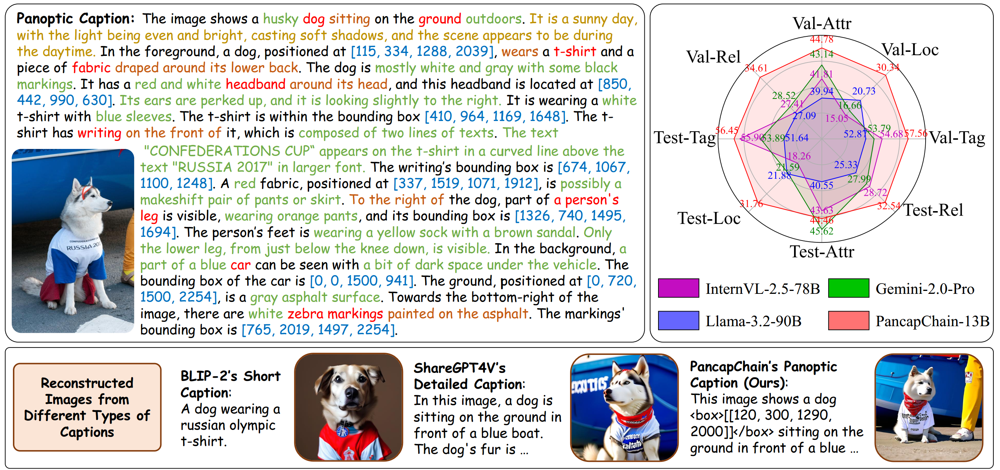
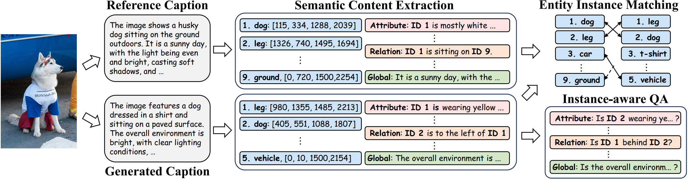
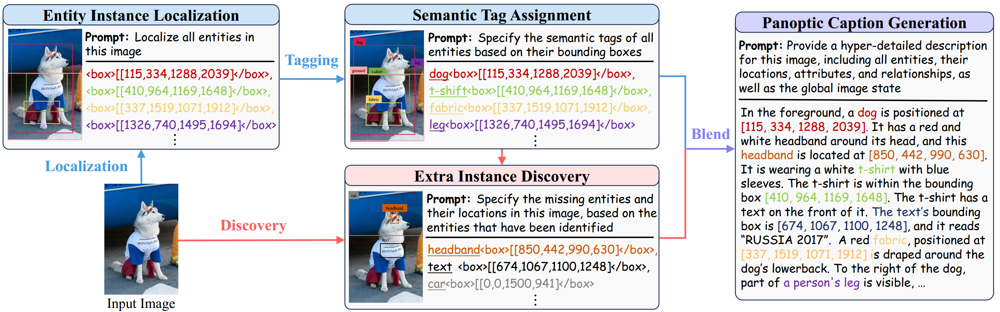
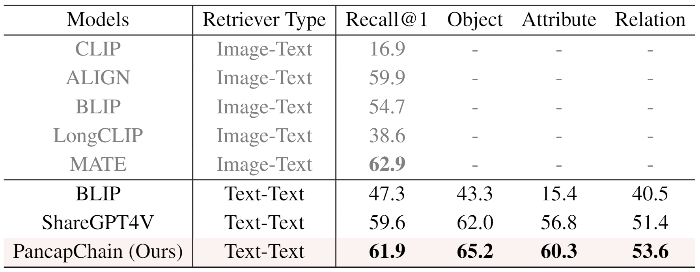
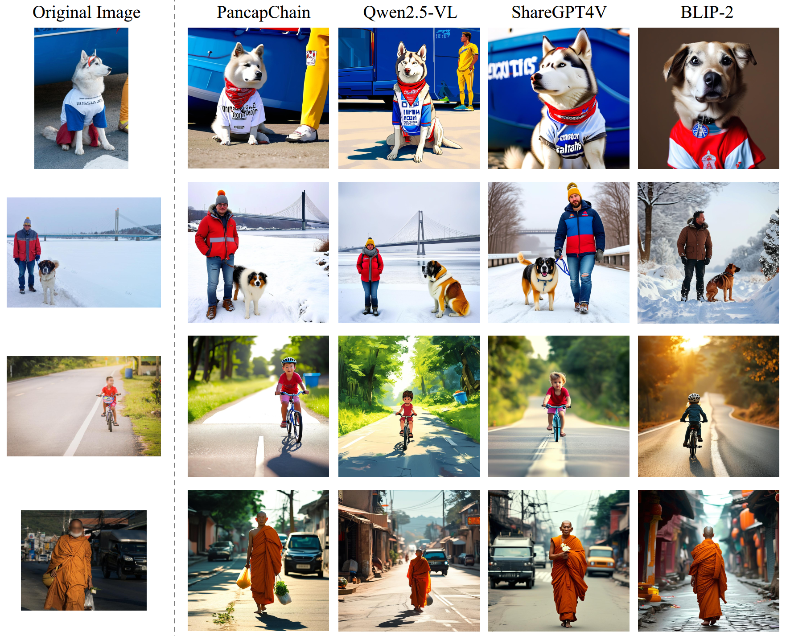

This work introduces panoptic captioning, a novel task striving to seek the minimum text equivalent of images. We take the first step towards panoptic captioning by formulating it as a task of generating a comprehensive textual description for an image, which encapsulates all entities, their respective locations and attributes, relationships among entities, as well as global image state. Through an extensive evaluation, our work reveals that state-of-the-art Multi-modal Large Language Models (MLLMs) have limited performance in solving panoptic captioning.
To address this, we propose an effective data engine named PancapEngine to produce high-quality data and a novel method named PancapChain to improve panoptic captioning. Specifically, our PancapEngine first detects diverse categories of entities in images by an elaborate detection suite, and then generates required panoptic captions using entity-aware prompts. Additionally, our PancapChain explicitly decouples the challenging panoptic captioning task into multiple stages and generates panoptic captions step by step. More importantly, we contribute a comprehensive metric named PancapScore and a human-curated test set for reliable model evaluation. Experiments show that our PancapChain-13B model can beat state-of-the-art open-source MLLMs like InternVL-2.5-78B and even surpass proprietary models like GPT-4o and Gemini-2.0-Pro, demonstrating the effectiveness of our data engine and method.
Our contributions are listed as follows:


(Note: Model names with the suffix "-Tuned" denote models tuned on the training set of SA-Pancap)
| Model | Validation Set | Test Set | ||||||||||
|---|---|---|---|---|---|---|---|---|---|---|---|---|
| Entity | Location | Attribute | Relation | Global | Overall | Entity | Location | Attribute | Relation | Global | Overall | |
| Molmo-72B | 52.06 | 10.03 | 36.88 | 25.90 | 76.78 | 132.53 | 50.92 | 14.00 | 38.10 | 38.10 | 68.49 | 130.55 |
| LLaVA-OneVision-72B | 54.20 | 13.79 | 38.94 | 27.80 | 85.52 | 143.28 | 53.62 | 15.16 | 41.52 | 25.63 | 82.39 | 144.17 |
| Qwen2-VL-72B | 49.85 | 12.92 | 37.83 | 24.71 | 86.30 | 133.96 | 48.19 | 12.90 | 38.48 | 20.44 | 84.13 | 128.42 |
| Qwen2.5-VL-72B | 54.08 | 19.70 | 40.00 | 27.24 | 85.34 | 149.54 | 54.42 | 25.11 | 42.33 | 26.32 | 87.12 | 156.89 |
| NVLM-72B | 54.69 | 10.78 | 42.49 | 30.40 | 86.21 | 146.97 | 57.79 | 11.53 | 46.48 | 29.48 | 78.60 | 153.14 |
| InternVL-2.5-78B | 54.68 | 15.05 | 41.81 | 27.41 | 88.37 | 147.79 | 55.90 | 18.26 | 43.63 | 28.72 | 81.46 | 154.66 |
| Llama-3.2-90B | 52.87 | 20.73 | 39.94 | 27.09 | 83.40 | 148.98 | 51.64 | 21.88 | 40.55 | 25.33 | 79.55 | 79.55 |
| GPT-4o | 50.89 | 10.12 | 40.54 | 25.40 | 88.85 | 135.83 | 53.51 | 14.55 | 43.86 | 27.38 | 87.08 | 148.01 |
| Gemini-2.0-Pro | 53.79 | 16.66 | 43.14 | 28.52 | 86.50 | 150.75 | 53.89 | 21.59 | 45.62 | 27.99 | 87.91 | 157.88 |
| LLaVA-1.5-13B-Tuned | 54.92 | 27.76 | 41.27 | 28.69 | 81.94 | 161.84 | 54.33 | 30.57 | 41.81 | 30.62 | 75.73 | 164.92 |
| ShareGPT4V-13B-Tuned | 55.02 | 23.81 | 40.53 | 29.13 | 82.16 | 156.70 | 52.94 | 25.56 | 39.56 | 25.11 | 80.36 | 151.21 |
| PancapChain-13B (Ours) | 57.56 | 30.34 | 44.78 | 34.61 | 84.59 | 175.75 | 56.45 | 31.76 | 44.46 | 32.54 | 79.85 | 173.19 |


@article{lin2025pancap,
title={Panoptic Captioning: An Equivalence Bridge for Image and Text},
author={Lin, Kun-Yu and Wang, Hongjun and Ren, Weining and Han, Kai},
booktitle={The Thirty-Ninth Annual Conference on Neural Information Processing Systems},
year={2025}
}